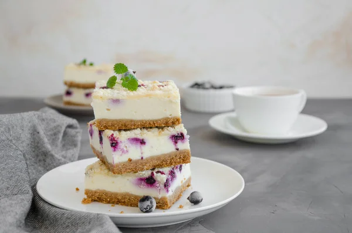
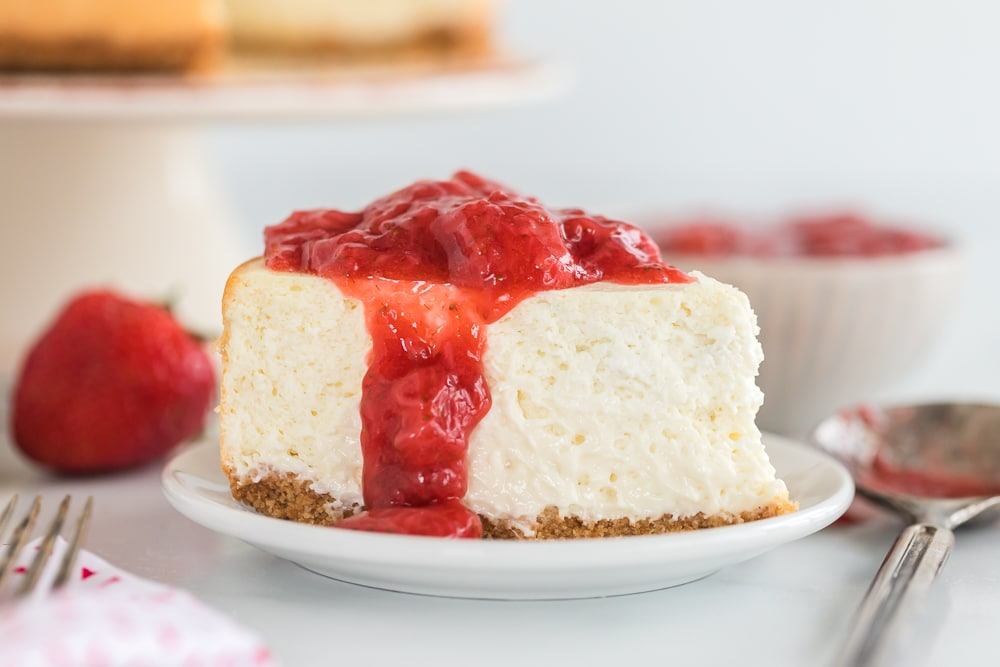
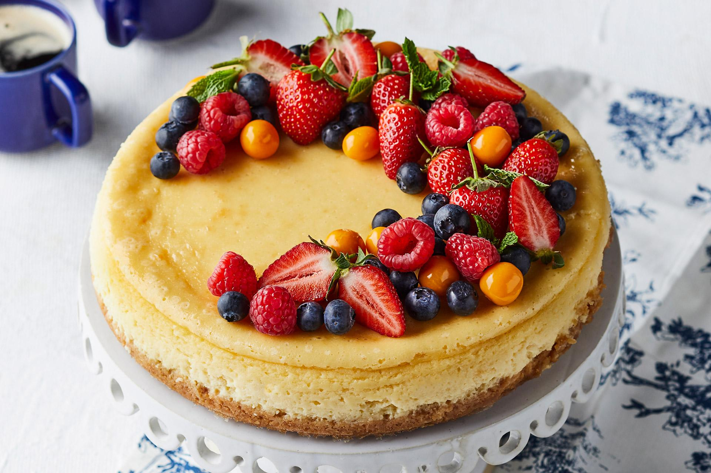
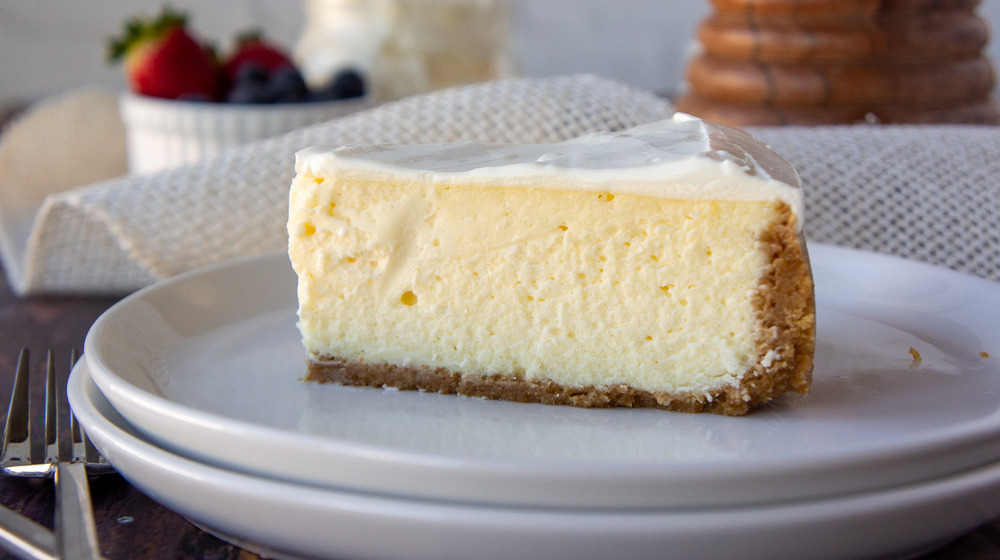

<div class="relative w-full h-full max-h-[600px] glide-05">
    <div class="overflow-hidden" data-glide-el="track">
        <ul class="relative w-full overflow-hidden h-full max-h-[600px] p-0 whitespace-no-wrap flex flex-no-wrap [backface-visibility: hidden] [transform-style: preserve-3d] [touch-action: pan-Y] [will-change: transform]">
            <li></li>
            <li></li>
            <li></li>
            <li></li>
        </ul>
    </div>

    <div class="flex items-center justify-center w-full gap-2" data-glide-el="controls[nav]">
        <button class="p-4 group" data-glide-dir="=0" aria-label="goto slide 1"><span class="block w-2 h-2 transition-colors duration-300 rounded-full ring-1 ring-slate-700 bg-white/20 focus:outline-none"></span></button>
        <button class="p-4 group" data-glide-dir="=1" aria-label="goto slide 2"><span class="block w-2 h-2 transition-colors duration-300 rounded-full ring-1 ring-slate-700 bg-white/20 focus:outline-none"></span></button>
        <button class="p-4 group" data-glide-dir="=2" aria-label="goto slide 3"><span class="block w-2 h-2 transition-colors duration-300 rounded-full ring-1 ring-slate-700 bg-white/20 focus:outline-none"></span></button>
        <button class="p-4 group" data-glide-dir="=3" aria-label="goto slide 4"><span class="block w-2 h-2 transition-colors duration-300 rounded-full ring-1 ring-slate-700 bg-white/20 focus:outline-none"></span></button>
    </div>
</div>

